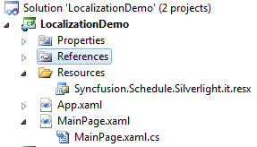
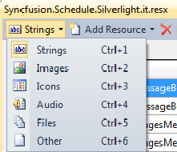
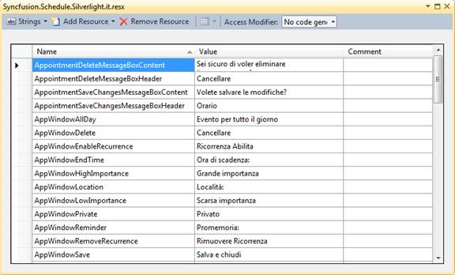

The following steps explain the implementation of Localization in applications.
Creating an Application
Create a Silverlight application and add Schedule to it.
Creating a Resource file
Following are the steps to create a resource file,
1. Create a folder named “Resources” in the application.
2. Create a resource file (Resx file) and name it “Syncfusion.Schedule.Silverlight.<your culture info name>.resx” e.g. Syncfusion.Schedule.Silverlight.it.resx.
Use the above mentioned naming convention, as it is mandatory. The following screenshot explains creating a Resource file.

Figure 38: Adding Resources file to the Application
Select the String option in the Resource file. This is explained in the following screenshot.

Figure 39: Adding string resources to the resx file.
Enter the Name and Value in the Resource file.
The names used in Grid are given in the Property table. The following screenshot explains the same.

Figure 40: Screenshot of the filled String Resources (Language: Italian)
Setting the Culture Information in the Application
Set the culture information in the application before the InitializeComponent() method is called. Now, application is set to UK English Culture info. The following code snippet explains how to set a culture to a WPF application.
|
[C#]
public MainPage() { System.Threading.Thread.CurrentThread.CurrentUICulture = new System.Globalization.CultureInfo("Ja");
InitializeComponent(); }
|
Or
|
CS (App.xaml.cs)
private void Application_Startup(object sender, StartupEventArgs e) { System.Threading.Thread.CurrentThread.CurrentUICulture = new System.Globalization.CultureInfo("Ja"); this.RootVisual = new MainPage(); } |